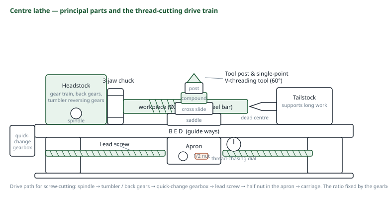
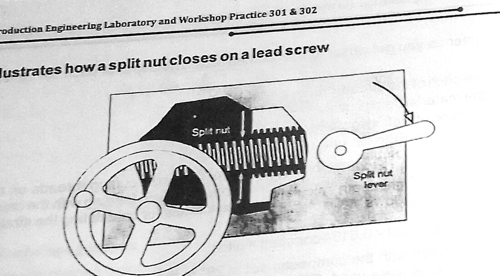
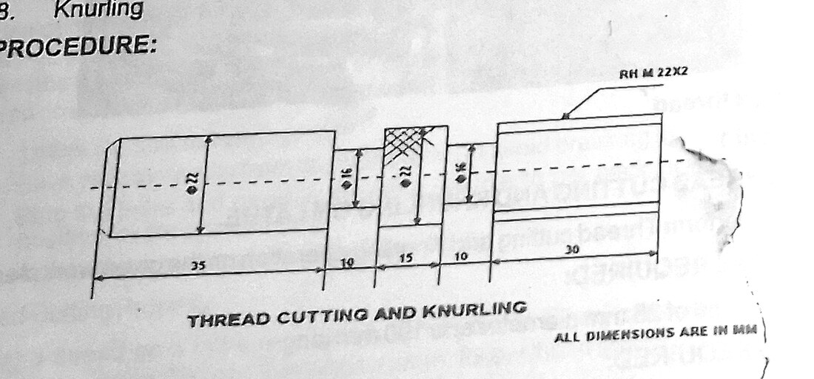

Section: Machine Shop · Code MS 301
Machine Shop: Thread Cutting and Knurling on the Centre Lathe
Screw cutting is the one lathe operation where the machine is no longer a free-running tool holder but a geared mechanism: the carriage is locked to the spindle through the lead screw so that one revolution of the work always advances the tool by exactly one pitch. Understanding that single kinematic chain — and the half-nut that engages it — is what the whole exercise is about.
1 Aims
The aim of this practical is to produce a stepped component on the centre lathe carrying a cut right-hand screw thread and a knurled gripping surface, and through that work to understand the construction of the lathe, the geometry and setting of the single-point tool, the relationship between cutting speed, feed and depth of cut, and the kinematics of the screw-cutting train.
A further aim is to appreciate what makes the lathe the foundation machine tool of the workshop. Every operation it performs — turning, facing, boring, parting, taper turning, screw cutting, knurling — derives from a single geometric idea: the work rotates about a fixed axis while a rigidly supported tool is moved along controlled straight-line paths relative to that axis. Once that is grasped, the wide range of shapes a lathe can produce stops being a list to memorise and becomes a consequence of one principle.
2 Objectives
- To know the construction of the centre lathe and the function of each of its principal parts.
- To familiarise with the work-holding and tool-holding devices of the machine shop.
- To set a single-point tool correctly with respect to the centre height of the machine.
- To select cutting speed, feed and depth of cut for mild steel and to calculate the corresponding spindle speed.
- To perform facing, centring, parallel turning and step turning to given dimensions.
- To cut a right-hand external V-thread of stated pitch using the screw-cutting mechanism and the compound slide set over at 29°.
- To produce a knurled surface with a knurling tool.
3 Apparatus
Material: mild steel bar, 25 mm diameter × 100 mm long. Cutting fluid (soluble oil).
- Centre latheThe machine tool; bed, headstock, tailstock, carriage, apron and feed mechanism.
- Three-jaw self-centring chuckHolds round and hexagonal bar; all three jaws move together.
- Four-jaw independent chuckHolds irregular work; each jaw adjusted separately, allowing eccentric setting.
- Live and dead centresSupport the free end of long work in the tailstock.
- Tool post and holderClamps the tool rigidly at the correct height and overhang.
- Right-hand turning tool (HSS)Roughing and finishing along the axis.
- Facing toolMachining the end face square to the axis.
- Parting-off toolCutting the finished component from the bar.
- 60° screw-cutting (V) toolGround to the exact ISO metric thread angle and checked with a centre gauge.
- Knurling toolHardened wheels that displace rather than cut, raising a diamond or straight pattern.
- Centre drillProduces the countersunk hole for the tailstock centre.
- Centre gauge (thread gauge)Setting the screw-cutting tool square to the work axis.
- Vernier caliper and micrometerChecking diameters and lengths.
- Thread pitch gauge and ring gauge / matching nutVerifying the cut thread.
- Chuck key, spanners, oil can, brushSetting up, lubrication, swarf clearance.
4 Theory and Diagrams
4.1 The centre lathe
The lathe is the oldest and most versatile of the machine tools, and it is often called the mother machine because it can, given time, produce the parts of any other machine tool including itself. Its working principle is that the workpiece is rotated about its own axis by the spindle while a single-point cutting tool, rigidly held, is fed against it. The relative motion between the rotating work and the traversing tool generates the surface.
Three motions are involved and it is worth naming them precisely:
- Cutting motion — the rotation of the workpiece, which provides the cutting velocity.
- Feed motion — the movement of the tool parallel or perpendicular to the axis, which brings fresh material into the cut and determines the surface generated.
- Depth of cut — the radial penetration of the tool, which determines how much material is removed per pass.

Principal parts and their functions
- Bed — the heavy cast-iron base carrying accurately machined guideways (slideways) on which the carriage and tailstock move. Its mass provides rigidity and damps vibration; the accuracy of the whole machine depends on the straightness of these ways.
- Headstock — houses the main spindle, its bearings and the speed-change gearing. The spindle is hollow, so that long bar can be fed through it, and its nose carries the chuck, faceplate or centre.
- Tailstock — mounted on the bed ways and clamped where required; carries a centre to support the free end of long work, or a drill chuck for drilling on the axis. It can be offset laterally for taper turning.
- Carriage — the assembly that carries and moves the tool. It comprises:
- the saddle, the H-shaped casting that slides along the bed ways;
- the cross slide, which moves the tool perpendicular to the axis;
- the compound (top) slide, which is mounted on a graduated swivel base and can be set at any angle for taper turning and for angular infeed in screw cutting;
- the tool post, which clamps the tool;
- the apron, the front plate carrying the handwheel, the feed clutch and the half-nut lever.
- Feed rod — a splined shaft that drives the carriage through a worm and clutch for ordinary turning feeds. It is a friction drive and can slip.
- Lead screw — a long, accurate Acme-threaded screw used only for screw cutting. It drives the carriage through the half-nut, positively and without slip.
- Change gear train / quick-change gearbox — connects the spindle to the lead screw at a selected ratio, which is what sets the pitch of the thread cut.
A beginner reasonably asks why the carriage needs both a feed rod and a lead screw. The answer is slip. For ordinary turning the drive goes through a clutch, so that if the tool jams the carriage stops rather than something breaking; a little slip costs nothing, because the finish does not depend on the carriage being at a mathematically exact position. Screw cutting is the opposite: the tool must re-enter exactly the same helical groove on every pass, so the connection between spindle and carriage must be positive with no slip whatever. Hence a dedicated, precision lead screw engaged by a half-nut, and hence also the rule that the lead screw is never used for ordinary feeding — wearing it out would destroy the machine's ability to cut accurate threads.
4.2 Cutting speed, feed and depth of cut
The cutting speed V is the surface speed of the work past the tool, and it is the variable that determines tool life. For a work diameter D (mm) rotating at N rev/min,
which rearranges to the form actually used at the machine:
The cutting speed is a property of the tool-and-work material pair, not of the machine: roughly 25–30 m/min for HSS on mild steel, rising to 100 m/min or more with a carbide tool. Since V is fixed and D changes as the job is turned down, N must be increased as the diameter reduces if the cutting speed is to be maintained.
The feed f is the distance the tool advances per revolution, in mm/rev. It has the strongest influence on surface finish: the theoretical roughness left by a tool of nose radius r is approximately f²/8r, so halving the feed quarters the roughness. Roughing feeds of 0.2–0.4 mm/rev and finishing feeds of 0.05–0.1 mm/rev are typical.
The depth of cut t is the radial engagement. Note carefully that the diameter reduces by twice the depth of cut, because the tool removes material from the full circumference:
The rate of metal removal is then
and the machining time for a length L in a single pass is T = L/(fN) minutes.
4.3 Tool geometry and setting
A single-point tool is defined by its rake and clearance angles. Rake angle is the angle of the face over which the chip flows; positive rake reduces cutting force and is used for ductile materials such as mild steel, while negative rake strengthens the cutting edge and is used for hard materials and interrupted cuts. Clearance (relief) angle prevents the flank of the tool rubbing on the freshly cut surface; too little and the tool burnishes and overheats, too much and the edge is unsupported and chips. The nose radius strengthens the point and, as noted, improves surface finish.
The single most important setting on the machine is centre height. The tool point must lie exactly on the axis of rotation. If it is set above centre, the effective clearance angle is reduced and the flank rubs; if below centre, the effective rake is reduced, the tool tends to dig in, and in facing a small pip is left at the centre of the work that the tool cannot remove. The height is set by comparison with the tailstock centre point, or by facing a test cut and inspecting the centre of the face.
4.4 Screw cutting on the lathe
The whole of screw cutting rests on one condition: in one revolution of the workpiece the tool must advance axially by exactly one pitch. The lathe achieves this by gearing the lead screw to the spindle. If the lead screw has a pitch pls and the gear train between spindle and lead screw has ratio i (driven over driver), then the tool advance per spindle revolution is i × pls, and this must equal the pitch pw to be cut:
On a modern lathe the required ratio is selected from a chart on a quick-change gearbox; on an older machine the change gears are physically swapped on the banjo. Either way, equation (5) is what the chart embodies.
The carriage is connected to the rotating lead screw by the half-nut (split nut) — two halves of an internal Acme thread carried on the apron and closed onto the lead screw by a lever operating a scroll cam. When the halves are closed the carriage is positively driven; when opened, the carriage is free.

The difficulty introduced by the half-nut is the problem of picking up the thread. A thread cannot be cut in one pass; it requires many passes of increasing depth, and on every one of them the tool must drop into exactly the groove it cut before. If the half-nut is engaged at an arbitrary instant, the tool will generally start at some arbitrary point on the helix and cut a second, interleaved thread — the job is ruined. There are two solutions:
- The thread dial indicator (chasing dial). A small dial geared to the lead screw, marked with numbered lines. Engaging the half-nut always at the same numbered line guarantees that the carriage starts at a position that is an integral number of pitches from the previous start, so the tool falls into the existing groove. The rule is: for an even-numbered pitch in the same unit system as the lead screw, any line may be used; for other cases only certain lines are valid, and for metric threads on an imperial lead screw (or vice versa) the dial cannot be used at all.
- Keeping the half-nut permanently engaged and reversing the spindle to return the carriage to the start. This never loses the thread and is the method that must be used when the dial cannot be relied on. It is slower, and the backlash in the train has to be taken up consistently.
The 29° compound setting
The tool could in principle be fed straight in with the cross slide. In practice it is fed in with the compound slide set over at 29° (or 29.5°) to the cross-slide direction, and the reason is important.
A 60° V-tool fed straight in cuts with both its flanks simultaneously. The chips from the two flanks collide, the cutting forces are high, the tool chatters and the thread flanks tear. Feeding in at 29° — just under half the 60° included angle — means the tool advances almost parallel to the trailing flank, so essentially all the cutting is done by the leading edge alone and a single clean chip is formed. The one degree less than 30° is deliberate: it leaves the trailing edge taking a very light shaving, which cleans up that flank without loading it.
The infeed is then read on the compound dial, and because the compound is at an angle the reading is not the radial depth. If the radial thread depth is h, the compound movement required is
For the ISO metric profile the radial depth of a full external thread is taken as
so for the M22 × 2 thread cut in this exercise h = 0.6134 × 2 = 1.227 mm and the total compound infeed is 1.227 × 1.1434 = 1.403 mm, taken in progressively decreasing increments over about twelve to fifteen passes, with the last one or two passes taken as spring cuts at zero additional infeed to remove the deflection left in the system.
The thread angle is generated by the tool, not by the machine, so the tool must be ground to exactly 60° included and — equally important — set exactly square to the work axis. This is done with a centre gauge: the vee of the gauge is placed against the turned diameter and the tool is brought up until it beds into the vee with no light showing on either side. A tool set even two or three degrees out of square produces a thread with unequal flank angles which no gauge will accept.
4.5 Knurling
Knurling is unlike every other operation on the lathe in one fundamental respect: it is a forming operation, not a cutting operation. No chip is produced. A pair of hardened steel wheels carrying a pattern of teeth is pressed radially into the rotating work with considerable force, and the metal is displaced — cold worked — flowing into the gaps between the teeth to raise the pattern.
Three consequences follow directly and all of them matter at the machine:
- The diameter increases. Because the displaced metal has to go somewhere and the only free direction is radially outward, the knurled diameter finishes larger than the turned diameter, typically by about a quarter to a third of the knurl pitch. If a knurled surface has to finish at a given size, the blank is turned undersize by that amount beforehand.
- The forces are very high and entirely radial. Slender work must be supported by the tailstock centre or a steady, or it will bow away from the tool.
- Speed must be low and lubrication generous. A slow spindle speed — roughly a third of the turning speed — with plenty of oil prevents the wheels from tearing the surface instead of forming it, and flushes out the metal particles that otherwise pack the teeth of the wheels and cause a flaked, ragged pattern.
The patterns available are straight (axial lines), diagonal, and diamond (a pair of opposite-hand helical wheels producing a crossed pattern). The purpose is almost always to provide grip on a surface turned by hand — the knobs, handles and thumbscrews of instruments and machines — although knurling is also used occasionally to increase a diameter slightly to provide an interference fit in a repair.
The critical technique point is the start. The wheels must be pressed in hard enough on first contact to form a full-depth pattern immediately. If contact is made too lightly, the wheels roll over the surface at whatever pitch they happen to pick up, and when the pressure is then increased the second impression does not coincide with the first: the result is a double-tracked or blurred knurl with twice the apparent number of lines, and it cannot be corrected by further passes. The only cure is to turn the surface off and start again.

5 Table of Values
Table 1 gives the component dimensions specified in the manual. Tables 2 and 3 give the settings calculated from equations (2), (6) and (7). These are design and setting values; no measured readings are presented.
| Feature | Diameter | Length | Operation |
|---|---|---|---|
| Raw stock | ø25 mm | 100 mm | As issued |
| Step 1 | ø22 mm | 35 mm | Parallel turning; subsequently screw cut M22 × 2 RH |
| Step 2 | ø16 mm | 10 mm | Parallel turning (relief / undercut) |
| Step 3 | ø22 mm | 15 mm | Parallel turning; knurled portion |
| Step 4 | ø16 mm | 10 mm | Parallel turning |
| Step 5 | ø22 mm | 30 mm | Parallel turning |
| Total | — | 100 mm | — |
| Quantity | Value | Source |
|---|---|---|
| Nominal (major) diameter, d | 22.00 mm | Specified |
| Pitch, p | 2.00 mm | Specified |
| Thread form | ISO metric, 60° | Standard |
| Hand | Right hand | Specified — carriage travels towards the headstock |
| Radial depth of thread, h = 0.6134p | 1.227 mm | Eq. (7) |
| Theoretical minor diameter, d − 1.2268p | 19.55 mm | d − 2h |
| Compound slide angle | 29° | Just under half the 60° included angle |
| Total compound infeed, h/cos 29° | 1.403 mm | Eq. (6) |
| Number of cutting passes | 12 – 15 | Decreasing increments, plus spring cuts |
| Blank diameter before cutting | 21.85 – 21.90 mm | 0.1–0.15 mm under nominal, to allow for crest rise |
| Operation | Cutting speed V (m/min) | Diameter D (mm) | Calculated N (rev/min) | Remark |
|---|---|---|---|---|
| Rough turning | 25 | 25 | 318 | Nearest machine speed selected below this |
| Rough turning | 25 | 22 | 362 | Speed raised as diameter falls |
| Finish turning | 30 | 22 | 434 | Light cut, fine feed |
| Finish turning | 30 | 16 | 597 | — |
| Screw cutting | — | 22 | 80 – 120 | Deliberately low; operator must stop at the run-out |
| Knurling | — | 22 | 100 – 150 | About one third of turning speed; flood lubrication |
| Operation | Feed (mm/rev) | Depth of cut (mm) |
|---|---|---|
| Roughing | 0.2 – 0.4 | 1.0 – 1.5 |
| Finishing | 0.05 – 0.1 | 0.2 – 0.5 |
| Facing | 0.1 – 0.2 | 0.5 – 1.0 |
| Screw cutting | 2.00 (= pitch, set by lead screw) | 0.25 falling to 0.02 per pass |
6 Procedure
A. Setting up
- The machine was inspected before use: guards in place, ways clean, oil levels checked, and the chuck key confirmed removed from the chuck.
- The ø25 × 100 mm mild steel bar was mounted in the three-jaw self-centring chuck with the minimum overhang required for the first operations, and the chuck key was removed immediately after tightening.
- The work was checked for run-out by rotating the spindle by hand against a scriber point.
- The right-hand turning tool was clamped in the tool post with minimum overhang — not more than about one and a half times the shank thickness — and set exactly on centre height by comparison with the tailstock centre point.
B. Facing and centring
- The spindle speed was set from equation (2) for ø25 mm and the end of the bar was faced with the facing tool, feeding from the outside towards the centre, until a clean flat surface square to the axis was produced.
- The end was centre drilled with the centre drill held in the tailstock chuck, producing the 60° countersink for the tailstock centre.
- The bar was reversed, the second end faced to bring the overall length to 100 mm, and that end also centre drilled.
- The work was then set up between the chuck and the tailstock centre for the turning operations, so that it was supported at both ends.
C. Parallel and step turning
- The five step lengths — 35, 10, 15, 10 and 30 mm — were marked off along the bar from the faced end using the carriage handwheel dial and confirmed with the rule.
- The whole length was rough turned to ø22 mm in passes of about 1.0–1.5 mm depth of cut at a feed of 0.3 mm/rev, with cutting fluid applied. Note that each 1.5 mm depth of cut reduces the diameter by 3.0 mm.
- The two ø16 mm steps were then rough turned at their marked positions, again in successive passes, the tool being withdrawn and the carriage returned between passes.
- A finishing cut of 0.25 mm depth at 0.08 mm/rev was taken over all diameters, with the spindle speed raised to maintain cutting speed, and each diameter was checked with the micrometer.
- The shoulder faces at each step were squared with the facing tool and the sharp corners lightly chamfered.
- The portion to be threaded was turned to 21.85 mm — slightly under the 22 mm nominal — and a 45° lead chamfer was turned at its free end. A relief groove was formed at the thread run-out using the parting tool, so that the screw-cutting tool would have somewhere to run out into.
D. Screw cutting the M22 × 2 RH thread
- The 60° screw-cutting tool was ground and checked against the centre gauge, then clamped on centre height and set square to the work axis using the centre gauge against the turned diameter, with no light showing on either flank.
- The compound slide was swivelled to 29° from the cross-slide direction, so that the infeed would be almost parallel to the trailing flank of the thread.
- The quick-change gearbox was set from the chart to give a lead screw ratio producing 2.00 mm of carriage travel per spindle revolution, and the lever for a right-hand thread (carriage travelling towards the headstock) was selected.
- The spindle speed was reduced to approximately 80–120 rev/min, low enough that the half-nut could be disengaged reliably at the end of each pass.
- A trial scratch pass was taken at almost zero depth, and the resulting helix was measured with the rule over ten threads and checked with the thread pitch gauge, confirming the pitch as 2.00 mm before any metal was committed.
- The cutting passes were then made. For each pass: the compound was advanced by the increment for that pass; the half-nut was engaged at the correct line on the thread dial; the tool cut along the thread to the relief groove; at the groove the cross slide was withdrawn and the half-nut disengaged simultaneously; and the carriage was wound back to the start with the cross slide returned to its original reading.
- Infeed increments were reduced progressively — roughly 0.25 mm on the first passes falling to 0.02 mm on the last — until the total compound infeed reached 1.403 mm.
- Two final spring passes were taken at no additional infeed to remove the elastic deflection in the tool and slides.
- Cutting fluid was applied on every pass, and the thread was checked periodically with a matching nut until it ran on freely.
- The thread crest was lightly deburred and the end chamfer cleaned up.
E. Knurling
- The knurling tool was mounted in the tool post with the wheels set exactly on centre height and their faces parallel to the work axis, so that both wheels would bear equally.
- The spindle speed was reduced to approximately 100–150 rev/min and the tailstock centre was brought up to support the work against the heavy radial load.
- The wheels were positioned at the edge of the ø22 mm portion to be knurled, overhanging it by about half the width of the wheels, and were pressed in firmly on first contact with the cross slide until a full-depth pattern was raised immediately.
- Cutting oil was applied liberally and the knurl was traversed along the knurled length under power feed, then reversed back over the same surface. Two or three traverses were made until the pattern was fully formed with sharp pyramids.
- The wheels were brushed clear of metal particles between passes, and the diameter was checked afterwards to record the rise produced by the displaced metal.
F. Finishing
- All sharp edges were chamfered, the component was deburred, and the finished dimensions were checked against the drawing with the vernier caliper and micrometer.
- The machine was stopped, the swarf cleared with a brush and hook — never by hand — and the ways wiped and oiled.
7 Precautions
- Safety glasses were worn at all times. Steel swarf leaves the work at high speed and is hot and razor sharp.
- Overalls were fastened, sleeves rolled to the elbow, ties and loose clothing removed, long hair tied back, and rings, watches and bracelets removed before approaching the machine. Gloves were not worn while the machine was running — a glove caught in rotating work will pull the hand in, which a bare hand would not.
- The chuck key was removed from the chuck immediately after every use and never left in it, even for a moment. A key left in the chuck becomes a projectile the instant the spindle is started.
- Guards were kept in position and the machine was never operated with a guard removed.
- The machine was stopped completely before any measurement, adjustment, tool change or work change. No measurement was taken on a rotating workpiece.
- Swarf was removed with a brush or hook, never with the fingers or a rag, and never while the spindle was turning. Long continuous chips were broken rather than allowed to form a coil around the work.
- The work was checked for security in the chuck before starting, and the overhang was kept as short as possible; long work was supported by the tailstock centre.
- Tool overhang was kept short to prevent deflection and chatter, and the tool was set exactly on centre height.
- Before engaging the screw-cutting drive, the carriage travel was checked clear and it was confirmed that the tool would run out into the relief groove rather than into a shoulder or the chuck jaws.
- Screw cutting was done at a deliberately low spindle speed, so that the half-nut could be disengaged in time at the end of each pass.
- The tailstock centre was supported and lubricated during knurling, and the knurling load was applied gradually enough not to bend the work but firmly enough to form the pattern on first contact.
- Cutting fluid was applied continuously during turning, threading and knurling to cool the cut and improve the surface.
- Hands were kept well clear of the rotating chuck and the tool point, and no attempt was made to slow or stop the chuck by hand.
- The area around the machine was kept clear of swarf and free of spilled oil, and the machine was left clean with the ways oiled.
8 Discussion
The component was produced to the drawing: five steps totalling 100 mm, an M22 × 2 right-hand thread that accepted a standard nut, and a knurled band that gripped well under the fingers. A number of things went wrong along the way, and they divide neatly into the three characteristic difficulties of this exercise.
Centre height and the pip. Our first facing cut left a small raised pip at the centre of the face. The cause was that the tool was set a fraction below centre: as the tool approaches the axis, the material at the very centre passes below the cutting edge and is never removed, and it stands up as a spike. Setting the tool exactly to the tailstock centre point removed it entirely. This is a good illustration of a general point about the lathe — most of the faults that appear to be skill problems are actually setting problems, and they are cheaper to fix at the setting stage than to fight at the cut.
The doubled thread. On the first attempt at screw cutting we disengaged the half-nut on one pass and then re-engaged it without reference to the thread dial. The tool started at a point on the helix offset from the previous groove, and it cut a second, interleaved thread. The result looked, at a glance, like a very fine thread; in fact it was two independent single-start threads at half the correct pitch depth, and the nut would not go on. There is no recovery from this: the thread has to be turned off and the blank made undersize, or the piece scrapped. Once we understood that the thread dial is not a convenience but the mechanism that preserves the phase relationship between the carriage and the spindle, and that it must be read on every single engagement, the problem disappeared. The alternative discipline — leaving the half-nut closed and reversing the spindle to return — is slower but immune, and it is the one we would use for any thread where the dial does not apply.
Feeding straight in. Before setting the compound over, we experimented with a straight cross-slide infeed on a scrap piece. The difference was dramatic: with both flanks cutting simultaneously the tool chattered audibly, the two chips interfered and packed in the groove, and the flanks came out torn. At 29° the cut was quiet and produced a single clean chip off the leading edge. The one-degree offset from a true 30° turned out to matter too: at exactly 30° the trailing flank does no cutting at all and is left with the finish produced by the roughing passes, whereas at 29° it takes a very light shaving and cleans up.
The double knurl. Our first knurling attempt produced a blurred, double-tracked pattern. We had approached the work gently, which felt like the careful thing to do, and the wheels rolled over the surface making a shallow impression at a pitch determined by nothing in particular; when the pressure was then increased, the teeth landed between the existing marks. The pattern was ruined. The counter-intuitive rule — press in hard immediately, and get full depth on first contact — makes complete sense once you accept that knurling is forming and not cutting. A cutting tool can take a light pass and then a heavier one over the same surface, because the second cut simply removes more material from a defined surface. A forming tool cannot, because the pattern it makes on the first pass is a permanent feature that the second pass has to register with.
The diameter rise on knurling was also instructive. Having turned the band to ø22 mm, the knurled surface measured noticeably over 22 mm afterwards. No material had been added and none removed; the metal had simply been redistributed radially outward into the pattern. For any component where a knurled surface must finish at a specified size — a knob that has to fit an instrument panel aperture, for instance — the blank must be turned undersize by roughly a third of the knurl pitch to allow for this.
Finally, the exercise demonstrated why the relief groove at the thread run-out is not an optional refinement. Screw cutting at 100 rev/min gives the operator well under a second to disengage the half-nut at the end of the pass, and the consequence of being late is the tool driving into the shoulder or the chuck. The groove converts a reaction-time problem into a geometric one: the tool runs out into free space and there is time to react. Everything about the way the job is sequenced — relief groove first, chamfer first, low speed, dial checked — is aimed at removing the moments where a single slip destroys the work.
9 Conclusion
The objectives of the practical were met. The construction of the centre lathe was studied and its principal parts — bed, headstock, tailstock, carriage with its saddle, cross slide, compound slide, tool post and apron, feed rod and lead screw — were identified and their functions established, including the reason for the separate feed rod and lead screw drives.
A stepped shaft was produced from ø25 × 100 mm mild steel to the specified dimensions: 35 mm at ø22, 10 mm at ø16, 15 mm at ø22, 10 mm at ø16 and 30 mm at ø22, by facing, centring, parallel turning and step turning at spindle speeds calculated from N = 1000V/πD. A right-hand ISO metric thread M22 × 2 was cut using the lead screw and half-nut with the compound slide set at 29°, the total radial depth of 0.6134p = 1.227 mm being applied as a compound infeed of 1.403 mm over twelve to fifteen decreasing passes plus spring cuts, and the finished thread accepted a standard nut. A diamond knurl was formed on the ø22 mm band at reduced spindle speed with flood lubrication.
It is concluded that screw cutting is governed entirely by the positive kinematic link between spindle and carriage: the ratio of the change gear train sets the pitch, and the thread dial preserves the phase of that link between passes, so that failing to read the dial produces an interleaved second thread and scraps the work. It is further concluded that knurling, being a forming rather than a cutting operation, obeys different rules from the rest of the lathe work — the pattern must be formed to full depth on first contact, the diameter increases rather than decreases, and speed must be low with generous lubrication.
Questions asked in the material
1. Show a working drawing of the component produced.
The working drawing was produced to scale in the drawing book as a single front elevation with a part-section, dimensioned as follows from the faced datum end: ø22 × 35 mm screw cut M22 × 2 with a 45° × 2 mm lead chamfer and a 3 mm wide × 1.5 mm deep relief groove at the run-out; ø16 × 10 mm; ø22 × 15 mm with a diamond knurl specified over the full 15 mm; ø16 × 10 mm; and ø22 × 30 mm. Overall length 100 mm. All shoulders square to the axis, all sharp corners chamfered 0.5 × 45°, material mild steel, and the knurl noted as “diamond knurl, turn ø21.4 before knurling”. The thread is dimensioned by designation rather than by measured flank dimensions, in accordance with normal drawing practice.
2. Using good sketches and short notes, state the operational steps.
- Mount and true. Grip in the three-jaw chuck, minimum overhang, remove the key, check run-out.
- Face and centre. Face both ends to 100 mm overall; centre drill each end; set up between chuck and tailstock centre.
- Rough turn. Calculate N = 1000V/πD; take passes of 1.0–1.5 mm depth at 0.3 mm/rev to bring the bar to ø22, remembering that the diameter falls by twice the depth of cut.
- Step turn. Mark the five lengths; turn the two ø16 mm steps; square the shoulders.
- Finish turn. 0.25 mm depth at 0.08 mm/rev; raise N as D falls; check with the micrometer.
- Prepare for threading. Turn the threaded portion to 21.85 mm, chamfer the end at 45°, cut the relief groove at the run-out.
- Set up for screw cutting. Grind and gauge the 60° tool, set it on centre and square with the centre gauge, swivel the compound to 29°, set the gearbox for 2 mm pitch RH, drop the speed to 80–120 rev/min.
- Scratch pass. Take a near-zero cut and verify the pitch over ten threads before committing.
- Cut. Infeed on the compound in decreasing increments to a total of 1.403 mm; engage the half-nut on the correct dial line every time; withdraw the cross slide and disengage at the groove; wind back and repeat. Finish with two spring passes. Test with a nut.
- Knurl. Fit the knurl on centre, drop the speed, support with the tailstock, press in hard on first contact, flood with oil, traverse two or three times.
- Finish. Chamfer, deburr, check all dimensions, clean the machine.
3. State the uses of each tool used during the exercise.
| Tool / device | Use in this exercise |
|---|---|
| Three-jaw self-centring chuck | Holding and centring the round bar; all jaws move together on a scroll. |
| Tailstock centre | Supporting the free end against turning and knurling forces. |
| Centre drill | Producing the 60° countersink for the centre. |
| Facing tool | Machining both ends square to the axis and squaring the step shoulders. |
| Right-hand turning tool | Rough and finish turning the five diameters. |
| Parting tool | Cutting the relief groove at the thread run-out. |
| 60° screw-cutting tool | Generating the thread form; the angle of the thread comes from the tool, not the machine. |
| Centre gauge | Checking the 60° grind and setting the tool square to the work axis. |
| Compound slide (set 29°) | Angular infeed so that essentially one flank cuts, avoiding chatter and torn flanks. |
| Lead screw and half-nut | Positively coupling carriage travel to spindle rotation at exactly one pitch per revolution. |
| Thread dial indicator | Preserving the phase of that coupling so the tool re-enters the same groove each pass. |
| Knurling tool | Cold-forming the diamond gripping pattern by displacement of metal. |
| Micrometer / vernier caliper | Checking diameters and lengths at every stage. |
| Thread pitch gauge / matching nut | Verifying the pitch after the scratch pass and the fit at completion. |
| Cutting fluid | Cooling and lubricating; essential to thread and knurl quality. |
4. List out the new things you have learnt.
Answered under What I learned.
5. State the safety precautions you observed.
Listed in full under Precautions. The critical lathe-specific ones are: remove the chuck key immediately, every time; no gloves, no loose clothing, no jewellery near rotating work; stop the machine before measuring or adjusting; clear swarf with a brush or hook and never with the hand; keep tool and work overhang short; and cut the relief groove so that the screw-cutting tool has somewhere safe to run out.
Special questions
S1. A bar of ø25 mm is to be turned to ø22 mm. What depth of cut is required, and what spindle speed should be selected for a cutting speed of 25 m/min?
The diameter is reduced by twice the depth of cut, since metal is removed all round the circumference:
The spindle speed, from equation (2), is calculated on the initial diameter, because that is the surface the tool meets on the first pass:
The nearest available speed below this would be selected. As the diameter falls to 22 mm the same cutting speed now corresponds to N = 25000/(π × 22) = 362 rev/min, so the speed is stepped up for the finishing cut to keep the surface speed — and therefore the tool life and finish — consistent.
S2. Calculate the compound slide infeed for the M22 × 2 thread, and explain why the compound is set to 29° rather than 30° or 0°.
The radial depth of an ISO metric external thread is h = 0.6134p = 0.6134 × 2 = 1.227 mm. Because the compound advances at 29° to the radial direction, the movement along the compound to achieve that radial depth is
At 0° (straight cross-slide infeed) both flanks of the 60° tool cut at once; two chips are produced in a confined groove, they interfere, the cutting force and the tendency to chatter are both high, and the flanks come out torn. At 30° — exactly half the included angle — the tool advances precisely parallel to the trailing flank, so that flank does no cutting at all and is left with whatever surface the roughing passes gave it. At 29° the leading edge does essentially all the cutting, producing a single clean chip, while the trailing edge takes a shaving of about 0.02 mm which cleans up that flank. One degree is the smallest offset that reliably achieves this given the backlash and setting accuracy of the slide.
S3. Why is a 127-tooth gear used when cutting metric threads on a lathe with an imperial lead screw?
Because 127 is the exact bridge between the two unit systems. One inch is defined as exactly 25.4 mm, and
Since 127 is a prime number, no combination of smaller gears can produce the ratio exactly; a 127-tooth gear (the “transposing” or “translating” gear) must appear physically in the train. A typical metric-on-imperial train uses a 127/100 pair, because 127/100 × (something) delivers the millimetre pitch exactly from an inch lead screw. Without it, only approximations are possible — a 63/50 pair, for example, gives an error of about 0.16 per cent, which is invisible over a short thread but accumulates to a noticeable mismatch over a long one. The same reasoning applies in reverse for imperial threads on a metric lead screw.
S4. Why does the knurled diameter come out larger than the turned diameter, and how is this allowed for?
Because knurling removes no material. The hardened wheels press into the surface and the displaced metal, being incompressible and having nowhere else to go, flows radially outward into the spaces between the teeth, raising pyramids above the original surface. The finished major diameter over the knurl is therefore greater than the turned diameter, typically by about a quarter to a third of the knurl pitch. Where the finished size matters, the blank is turned undersize by that amount before knurling — in this exercise, turning the band to about ø21.4 mm gives a knurled diameter of approximately ø22 mm. It also follows that a knurl can be used deliberately as a repair technique, to raise a worn shaft diameter enough to restore an interference fit in a housing.
S5. What is the function of the thread dial indicator, and when can it not be used?
Its function is to tell the operator at which instants the half-nut may be closed so that the tool re-enters the groove it cut on the previous pass. The dial is driven by a worm wheel meshing with the lead screw, so its rotation measures the carriage's phase relative to the lead screw thread; engaging always at the same numbered line guarantees that successive engagements are separated by a whole number of lead screw pitches, and hence a whole number of workpiece pitches.
It cannot be used when the pitch being cut is not commensurable with the lead screw pitch — in particular when cutting a metric thread on a lathe with an imperial lead screw, or an imperial thread on a metric one, and for certain fractional pitches. In those cases the half-nut is left permanently engaged for the whole job and the carriage is returned to the start by reversing the spindle, which cannot lose the thread because the coupling is never broken.
What I learned
- That the lathe generates every one of its surfaces from a single idea — work rotating about a fixed axis, tool moved along controlled straight paths — and that once this is grasped, taper turning, facing, boring and screw cutting are variations rather than separate skills.
- Why the lathe has both a feed rod and a lead screw: one is a slipping drive for ordinary feeding, the other a positive precision drive reserved for screw cutting.
- That the diameter reduces by twice the depth of cut — obvious in hindsight and the source of the commonest arithmetic error at the machine.
- That spindle speed must be recalculated as the diameter changes, because it is the cutting speed that is fixed by the materials, not the rev/min.
- That centre height is not a detail: a tool set low leaves a pip when facing and digs in when turning, and a tool set high rubs.
- The kinematics of screw cutting — that the gear ratio between spindle and lead screw is the pitch — and that the thread dial preserves the phase of that link between passes.
- That failing to read the thread dial produces an interleaved second thread, which cannot be corrected and scraps the work.
- Why the compound is set to 29°: to make one flank do the cutting, avoiding the chatter and torn flanks of a straight infeed, while still letting the trailing flank clean up.
- That the thread angle is produced by the tool, so the tool must be ground and set with a centre gauge, and that a scratch pass should always be taken and the pitch verified before metal is committed.
- That knurling is forming, not cutting: no chip, the diameter grows instead of shrinking, and the pattern must be established at full depth on first contact or it doubles.
- That a relief groove at a thread run-out converts a reaction-time hazard into a geometric one, and that sequencing a job to eliminate such moments is part of the planning, not an afterthought.
- That the chuck key comes out of the chuck every single time, without exception — the one lathe habit with no acceptable lapse rate.